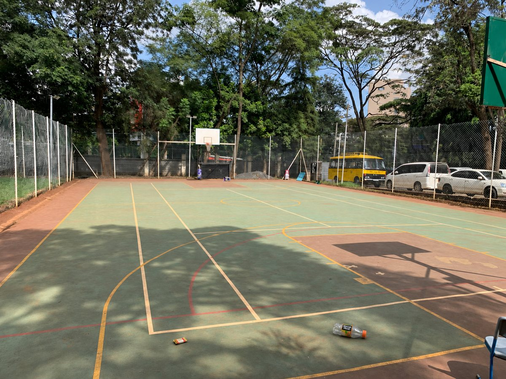

Causes
Land pollution begins when waste is left on the ground or is not disposed of in the correct way.
- Littering
- Poor waste disposal
- Excessive packaging
- Incorrect disposal of harmful materials
Land pollution happens when litter, chemicals and other waste contaminate or damage the ground. It can affect soil, plants, animals and the places where people live.

Land pollution begins when waste is left on the ground or is not disposed of in the correct way.
Waste left on land affects the soil underneath it and the living things that depend on that soil.
Producing less waste, and dealing with it properly, keeps land clean and healthy.
School grounds are shared by everyone, so every student is responsible for keeping them clean.
Courts, fields and gardens are used by many classes and teams each day. Even one bottle or one wrapper makes a shared space less clean and less pleasant for the next group, and litter on a playing surface can get in the way of a game.
A small amount of packaging waste is very noticeable in an otherwise clean space. Taking drinks bottles and snack wrappers with you when you leave keeps these areas ready for everyone.